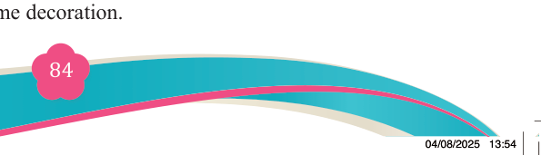
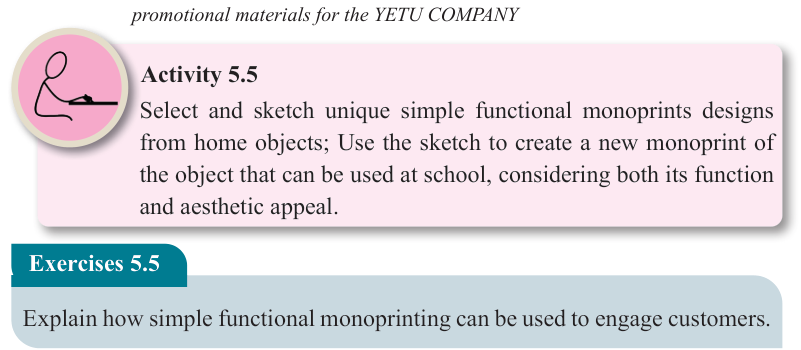

<!DOCTYPE html>
<html lang="en">

<head>
    <meta charset="utf-8" />
    <meta name="viewport" content="width=558, height=768" />
    <title>Fine Art for Secondary Schools</title>
    <meta name="title-id" content="pg090_sec001" />
    <meta name="page-section-id" content="90" />
    <link href="./content/tailwind_output.css" rel="stylesheet">
    <link href="./assets/libs/fontawesome/css/all.min.css" rel="stylesheet">
    <link href="./assets/fonts.css" rel="stylesheet">
    <link rel="preconnect" href="https://fonts.googleapis.com">
    <link rel="preconnect" href="https://fonts.gstatic.com" crossorigin>
    <link href="https://fonts.googleapis.com/css2?family=Caladea&amp;family=Tinos&amp;family=Arimo&amp;display=swap" rel="stylesheet">
    <style>
      html { width: 100%; height: 100%; background: #e5e7eb; }
      body { background: #e5e7eb; }
      #content {
        visibility: hidden;
        background: #fff;
        outline: 1px solid rgba(15, 23, 42, 0.28);
        box-shadow: 0 10px 30px rgba(15, 23, 42, 0.22);
      }
    </style>
    <noscript><style>#content { visibility: visible !important; }</style></noscript>
</head>

<body style="margin:0;overflow:hidden;width:100%;height:100%">
    <main>
      <div id="content" data-fl-reference-width="558" style="position:relative;width:558px;height:768px;margin:0 auto;overflow:hidden">
  
  
  
  
  
  
  
  
  
  
  <p data-id="pg090_p000" data-adt-raster-text="1" data-adt-reading-order="8" data-segments="[{&quot;text&quot;:&quot;Fine Art for Secondary Schools&quot;,&quot;style&quot;:{&quot;font-family&quot;:&quot;Caladea,serif&quot;,&quot;font-size&quot;:&quot;9px&quot;,&quot;color&quot;:&quot;#231f20&quot;}}]" data-adt-fit="1" style="position:absolute;z-index:2;top:49px;left:94px;line-height:9px;width:120px;height:9px;white-space:nowrap;opacity:0"><span style="font-family:Caladea,Merriweather,serif;font-size:9px;color:#231f20">Fine Art for Secondary Schools</span></p>
  
  <p data-id="pg090_p001" data-adt-raster-text="1" data-adt-reading-order="35" data-segments="[{&quot;text&quot;:&quot;84&quot;,&quot;style&quot;:{&quot;font-family&quot;:&quot;Caladea,serif&quot;,&quot;font-size&quot;:&quot;12px&quot;,&quot;color&quot;:&quot;#ffffff&quot;}}]" data-adt-fit="1" style="position:absolute;z-index:2;top:704px;left:268px;line-height:12px;width:13px;height:12px;white-space:nowrap;opacity:0"><span style="font-family:Caladea,Merriweather,serif;font-size:12px;color:#ffffff">84</span></p>
  
  <p data-id="pg090_p002" data-adt-raster-text="1" data-adt-reading-order="34" data-segments="[{&quot;text&quot;:&quot;Student&#x2019;s Book&quot;,&quot;style&quot;:{&quot;font-family&quot;:&quot;Tinos,serif&quot;,&quot;font-size&quot;:&quot;9px&quot;,&quot;color&quot;:&quot;#231f20&quot;}},{&quot;text&quot;:&quot; Form &quot;,&quot;style&quot;:{&quot;font-family&quot;:&quot;Tinos,serif&quot;,&quot;font-size&quot;:&quot;9px&quot;,&quot;color&quot;:&quot;#231f20&quot;,&quot;font-weight&quot;:&quot;bold&quot;}},{&quot;text&quot;:&quot;Two&quot;,&quot;style&quot;:{&quot;font-family&quot;:&quot;Tinos,serif&quot;,&quot;font-size&quot;:&quot;9px&quot;,&quot;color&quot;:&quot;#231f20&quot;,&quot;font-weight&quot;:&quot;bold&quot;,&quot;font-style&quot;:&quot;italic&quot;}}]" data-adt-fit="1" style="position:absolute;z-index:2;top:702px;left:94px;line-height:9px;width:97px;height:12px;white-space:nowrap;opacity:0"><span style="font-family:Tinos,&apos;Times New Roman&apos;,Times,Merriweather,serif;font-size:9px;color:#231f20">Student&#x2019;s Book</span><span style="font-family:Tinos,&apos;Times New Roman&apos;,Times,Merriweather,serif;font-size:9px;color:#231f20;font-weight:bold"> Form </span><span style="font-family:Tinos,&apos;Times New Roman&apos;,Times,Merriweather,serif;font-size:9px;color:#231f20;font-weight:bold;font-style:italic">Two</span></p>
  
  
  
  <p data-id="pg090_p003" data-adt-reading-order="10" data-segments="[{&quot;text&quot;:&quot;Figure 5.4:&quot;,&quot;style&quot;:{&quot;font-family&quot;:&quot;Tinos,serif&quot;,&quot;font-size&quot;:&quot;10px&quot;,&quot;color&quot;:&quot;#231f20&quot;,&quot;font-weight&quot;:&quot;bold&quot;}},{&quot;text&quot;:&quot; \u0007YETU simple functional monoprint is used in designing various marketing and&quot;,&quot;style&quot;:{&quot;font-family&quot;:&quot;Tinos,serif&quot;,&quot;font-size&quot;:&quot;10px&quot;,&quot;color&quot;:&quot;#231f20&quot;,&quot;font-style&quot;:&quot;italic&quot;}}]" data-adt-fit="1" style="position:absolute;z-index:2;top:299px;left:98px;line-height:10px;width:366px;height:16px;white-space:nowrap"><span style="font-family:Tinos,&apos;Times New Roman&apos;,Times,Merriweather,serif;font-size:10px;color:#231f20;font-weight:bold">Figure 5.4:</span><span style="font-family:Tinos,&apos;Times New Roman&apos;,Times,Merriweather,serif;font-size:10px;color:#231f20;font-style:italic"> YETU simple functional monoprint is used in designing various marketing and</span></p>
  
  <p data-id="pg090_p004" data-adt-reading-order="11" data-segments="[{&quot;text&quot;:&quot;promotional materials for the YETU COMPANY&quot;,&quot;style&quot;:{&quot;font-family&quot;:&quot;Tinos,serif&quot;,&quot;font-size&quot;:&quot;10px&quot;,&quot;color&quot;:&quot;#231f20&quot;,&quot;font-style&quot;:&quot;italic&quot;}}]" data-adt-fit="1" style="position:absolute;z-index:2;top:315px;left:147px;line-height:10px;width:317px;height:14px;white-space:nowrap"><span style="font-family:Tinos,&apos;Times New Roman&apos;,Times,Merriweather,serif;font-size:10px;color:#231f20;font-style:italic">promotional materials for the YETU COMPANY</span></p>
  
  <p data-id="pg090_p005" data-adt-reading-order="12" data-segments="[{&quot;text&quot;:&quot;Activity 5.5&quot;,&quot;style&quot;:{&quot;font-family&quot;:&quot;Tinos,serif&quot;,&quot;font-size&quot;:&quot;12px&quot;,&quot;color&quot;:&quot;#231f20&quot;,&quot;font-weight&quot;:&quot;bold&quot;}}]" data-adt-fit="1" style="position:absolute;z-index:2;top:344px;left:151px;line-height:12px;width:322px;height:17px;white-space:nowrap"><span style="font-family:Tinos,&apos;Times New Roman&apos;,Times,Merriweather,serif;font-size:12px;color:#231f20;font-weight:bold">Activity 5.5</span></p>
  <p data-id="pg090_p006" data-adt-reading-order="13" data-segments="[{&quot;text&quot;:&quot;Select and sketch unique simple functional monoprints designs\n&quot;,&quot;style&quot;:{&quot;font-family&quot;:&quot;Tinos,serif&quot;,&quot;font-size&quot;:&quot;12px&quot;,&quot;color&quot;:&quot;#231f20&quot;}},{&quot;text&quot;:&quot;from home objects; Use the sketch to create a new monoprint of\n&quot;,&quot;style&quot;:{&quot;font-family&quot;:&quot;Tinos,serif&quot;,&quot;font-size&quot;:&quot;12px&quot;,&quot;color&quot;:&quot;#231f20&quot;}},{&quot;text&quot;:&quot;the object that can be used at school, considering both its function\n&quot;,&quot;style&quot;:{&quot;font-family&quot;:&quot;Tinos,serif&quot;,&quot;font-size&quot;:&quot;12px&quot;,&quot;color&quot;:&quot;#231f20&quot;}},{&quot;text&quot;:&quot;and aesthetic appeal.&quot;,&quot;style&quot;:{&quot;font-family&quot;:&quot;Tinos,serif&quot;,&quot;font-size&quot;:&quot;12px&quot;,&quot;color&quot;:&quot;#231f20&quot;}}]" data-adt-fit="1" style="position:absolute;z-index:2;top:361px;left:150px;line-height:12px;width:323px;height:77px;white-space:pre"><span style="font-family:Tinos,&apos;Times New Roman&apos;,Times,Merriweather,serif;font-size:12px;color:#231f20">Select and sketch unique simple functional monoprints designs
</span><span style="font-family:Tinos,&apos;Times New Roman&apos;,Times,Merriweather,serif;font-size:12px;color:#231f20">from home objects; Use the sketch to create a new monoprint of
</span><span style="font-family:Tinos,&apos;Times New Roman&apos;,Times,Merriweather,serif;font-size:12px;color:#231f20">the object that can be used at school, considering both its function
</span><span style="font-family:Tinos,&apos;Times New Roman&apos;,Times,Merriweather,serif;font-size:12px;color:#231f20">and aesthetic appeal.</span></p>
  <p data-id="pg090_p010" data-adt-reading-order="14" data-segments="[{&quot;text&quot;:&quot;Exercises 5.5&quot;,&quot;style&quot;:{&quot;font-family&quot;:&quot;Tinos,serif&quot;,&quot;font-size&quot;:&quot;12px&quot;,&quot;color&quot;:&quot;#ffffff&quot;,&quot;font-weight&quot;:&quot;bold&quot;}}]" data-adt-fit="1" style="position:absolute;z-index:2;top:438px;left:95px;line-height:12px;width:116px;height:28px;white-space:nowrap"><span style="font-family:Tinos,&apos;Times New Roman&apos;,Times,Merriweather,serif;font-size:12px;color:#ffffff;font-weight:bold">Exercises 5.5</span></p>
  <p data-id="pg090_p011" data-adt-reading-order="15" data-segments="[{&quot;text&quot;:&quot;Explain how simple functional monoprinting can be used to engage customers.&quot;,&quot;style&quot;:{&quot;font-family&quot;:&quot;Tinos,serif&quot;,&quot;font-size&quot;:&quot;12px&quot;,&quot;color&quot;:&quot;#231f20&quot;}}]" data-adt-fit="1" style="position:absolute;z-index:2;top:466px;left:92px;line-height:12px;width:381px;height:29px;white-space:nowrap;letter-spacing:-0.15px"><span style="font-family:Tinos,&apos;Times New Roman&apos;,Times,Merriweather,serif;font-size:12px;color:#231f20">Explain how simple functional monoprinting can be used to engage customers.</span></p>
  <p data-id="pg090_p012" data-adt-reading-order="16" data-segments="[{&quot;text&quot;:&quot;Characteristics of simple functional monoprints&quot;,&quot;style&quot;:{&quot;font-family&quot;:&quot;Tinos,serif&quot;,&quot;font-size&quot;:&quot;12px&quot;,&quot;color&quot;:&quot;#007c91&quot;,&quot;font-weight&quot;:&quot;bold&quot;}}]" data-adt-fit="1" style="position:absolute;z-index:2;top:495px;left:86px;line-height:12px;width:387px;height:18px;white-space:nowrap"><span style="font-family:Tinos,&apos;Times New Roman&apos;,Times,Merriweather,serif;font-size:12px;color:#007c91;font-weight:bold">Characteristics of simple functional monoprints</span></p>
  <p data-id="pg090_p013" data-adt-reading-order="17" data-segments="[{&quot;text&quot;:&quot;(a) Clear purpose&quot;,&quot;style&quot;:{&quot;font-family&quot;:&quot;Tinos,serif&quot;,&quot;font-size&quot;:&quot;12px&quot;,&quot;color&quot;:&quot;#231f20&quot;}}]" data-adt-fit="1" style="position:absolute;z-index:2;top:513px;left:86px;line-height:12px;width:387px;height:30px;white-space:nowrap"><span style="font-family:Tinos,&apos;Times New Roman&apos;,Times,Merriweather,serif;font-size:12px;color:#231f20">(a) Clear purpose</span></p>
  <p data-id="pg090_p014" data-adt-reading-order="18" data-segments="[{&quot;text&quot;:&quot;Simple functional monoprints are made to clearly show information or solve&quot;,&quot;style&quot;:{&quot;font-family&quot;:&quot;Tinos,serif&quot;,&quot;font-size&quot;:&quot;11.999350547790527px&quot;,&quot;color&quot;:&quot;#231f20&quot;}}]" data-adt-fit="1" style="position:absolute;z-index:2;top:528px;left:106px;line-height:12px;width:367px;height:16px;white-space:nowrap;letter-spacing:-0.15px"><span style="font-family:Tinos,&apos;Times New Roman&apos;,Times,Merriweather,serif;font-size:11.999350547790527px;color:#231f20">Simple functional monoprints are made to clearly show information or solve</span></p>
  <p data-id="pg090_p015" data-adt-reading-order="19" data-segments="[{&quot;text&quot;:&quot;a problem.&quot;,&quot;style&quot;:{&quot;font-family&quot;:&quot;Tinos,serif&quot;,&quot;font-size&quot;:&quot;12px&quot;,&quot;color&quot;:&quot;#231f20&quot;}}]" data-adt-fit="1" style="position:absolute;z-index:2;top:543px;left:106px;line-height:12px;width:367px;height:18px;white-space:nowrap"><span style="font-family:Tinos,&apos;Times New Roman&apos;,Times,Merriweather,serif;font-size:12px;color:#231f20">a problem.</span></p>
  <p data-id="pg090_p016" data-adt-reading-order="20" data-segments="[{&quot;text&quot;:&quot;(b) Uniqueness&quot;,&quot;style&quot;:{&quot;font-family&quot;:&quot;Tinos,serif&quot;,&quot;font-size&quot;:&quot;12px&quot;,&quot;color&quot;:&quot;#231f20&quot;}}]" data-adt-fit="1" style="position:absolute;z-index:2;top:561px;left:86px;line-height:12px;width:387px;height:15px;white-space:nowrap"><span style="font-family:Tinos,&apos;Times New Roman&apos;,Times,Merriweather,serif;font-size:12px;color:#231f20">(b) Uniqueness</span></p>
  <p data-id="pg090_p017" data-adt-reading-order="21" data-segments="[{&quot;text&quot;:&quot;Every print is one-of-a-kind; no two prints are ever the same, giving each\n&quot;,&quot;style&quot;:{&quot;font-family&quot;:&quot;Tinos,serif&quot;,&quot;font-size&quot;:&quot;12px&quot;,&quot;color&quot;:&quot;#231f20&quot;}},{&quot;text&quot;:&quot;piece a special one-of-a-kind quality&quot;,&quot;style&quot;:{&quot;font-family&quot;:&quot;Tinos,serif&quot;,&quot;font-size&quot;:&quot;12px&quot;,&quot;color&quot;:&quot;#231f20&quot;}}]" data-adt-fit="1" style="position:absolute;z-index:2;top:576px;left:106px;line-height:12px;width:367px;height:32px;white-space:pre"><span style="font-family:Tinos,&apos;Times New Roman&apos;,Times,Merriweather,serif;font-size:12px;color:#231f20">Every print is one-of-a-kind; no two prints are ever the same, giving each
</span><span style="font-family:Tinos,&apos;Times New Roman&apos;,Times,Merriweather,serif;font-size:12px;color:#231f20">piece a special one-of-a-kind quality</span></p>
  <p data-id="pg090_p019" data-adt-reading-order="22" data-segments="[{&quot;text&quot;:&quot;(c) Useful and attractive&quot;,&quot;style&quot;:{&quot;font-family&quot;:&quot;Tinos,serif&quot;,&quot;font-size&quot;:&quot;12px&quot;,&quot;color&quot;:&quot;#231f20&quot;}}]" data-adt-fit="1" style="position:absolute;z-index:2;top:608px;left:86px;line-height:12px;width:387px;height:15px;white-space:nowrap"><span style="font-family:Tinos,&apos;Times New Roman&apos;,Times,Merriweather,serif;font-size:12px;color:#231f20">(c) Useful and attractive</span></p>
  <p data-id="pg090_p020" data-adt-reading-order="23" data-segments="[{&quot;text&quot;:&quot;Simple functional monoprints have to combine aesthetic appeal with a specific&quot;,&quot;style&quot;:{&quot;font-family&quot;:&quot;Tinos,serif&quot;,&quot;font-size&quot;:&quot;11.919480323791504px&quot;,&quot;color&quot;:&quot;#231f20&quot;}}]" data-adt-fit="1" style="position:absolute;z-index:2;top:623px;left:106px;line-height:12px;width:367px;height:15px;white-space:nowrap;letter-spacing:-0.15px"><span style="font-family:Tinos,&apos;Times New Roman&apos;,Times,Merriweather,serif;font-size:11.919480323791504px;color:#231f20">Simple functional monoprints have to combine aesthetic appeal with a specific</span></p>
  <p data-id="pg090_p021" data-adt-reading-order="24" data-segments="[{&quot;text&quot;:&quot;practical function. Unlike purely decorative prints, simple functional monoprints&quot;,&quot;style&quot;:{&quot;font-family&quot;:&quot;Tinos,serif&quot;,&quot;font-size&quot;:&quot;11.841503143310547px&quot;,&quot;color&quot;:&quot;#231f20&quot;}}]" data-adt-fit="1" style="position:absolute;z-index:2;top:638px;left:106px;line-height:12px;width:367px;height:15px;white-space:nowrap;letter-spacing:-0.15px"><span style="font-family:Tinos,&apos;Times New Roman&apos;,Times,Merriweather,serif;font-size:11.841503143310547px;color:#231f20">practical function. Unlike purely decorative prints, simple functional monoprints</span></p>
  <p data-id="pg090_p022" data-adt-reading-order="26" data-segments="[{&quot;text&quot;:&quot;have both an aesthetic (beauty) and a specific practical use, whether is designed&quot;,&quot;style&quot;:{&quot;font-family&quot;:&quot;Tinos,serif&quot;,&quot;font-size&quot;:&quot;11.888178825378418px&quot;,&quot;color&quot;:&quot;#231f20&quot;}}]" data-adt-fit="1" style="position:absolute;z-index:2;top:653px;left:106px;line-height:12px;width:367px;height:16px;white-space:nowrap;letter-spacing:-0.15px"><span style="font-family:Tinos,&apos;Times New Roman&apos;,Times,Merriweather,serif;font-size:11.888178825378418px;color:#231f20">have both an aesthetic (beauty) and a specific practical use, whether is designed</span></p>
  <p data-id="pg090_p023" data-adt-reading-order="32" data-segments="[{&quot;text&quot;:&quot;on clothing, ceramics or home decoration.&quot;,&quot;style&quot;:{&quot;font-family&quot;:&quot;Tinos,serif&quot;,&quot;font-size&quot;:&quot;12px&quot;,&quot;color&quot;:&quot;#231f20&quot;}}]" data-adt-fit="1" style="position:absolute;z-index:2;top:669px;left:106px;line-height:12px;width:205px;height:16px;white-space:nowrap"><span style="font-family:Tinos,&apos;Times New Roman&apos;,Times,Merriweather,serif;font-size:12px;color:#231f20">on clothing, ceramics or home decoration.</span></p>
  <p data-id="pg090_p025" data-adt-raster-text="1" data-adt-reading-order="37" data-segments="[{&quot;text&quot;:&quot;04/08/2025 13:54&quot;,&quot;style&quot;:{&quot;font-family&quot;:&quot;Arimo,serif&quot;,&quot;font-size&quot;:&quot;6px&quot;,&quot;color&quot;:&quot;#ffffff&quot;}}]" data-adt-fit="1" style="position:absolute;z-index:2;top:746px;left:474px;line-height:6px;width:48px;height:6px;white-space:nowrap;opacity:0"><span style="font-family:Arimo,Arial,Helvetica,Merriweather,sans-serif;font-size:6px;color:#ffffff">04/08/2025 13:54</span></p>
<script src="./assets/auto-fit.js"></script>
</div>
    </main>
    <script>
      (function () {
        var c = document.getElementById("content");
        if (!c) return;
        var W = parseFloat(c.style.width) || c.offsetWidth || 1;
        var H = parseFloat(c.style.height) || c.offsetHeight || 1;
        var ref = parseFloat(c.getAttribute("data-fl-reference-width"));
        var refW = ref > 0 ? ref : W;
        var FALLBACK = 96;
        function dock() {
          var v = parseFloat(getComputedStyle(document.documentElement).getPropertyValue("--dock-height"));
          return v > 0 ? v : FALLBACK;
        }
        function fit() {
          var DOCK = dock();
          var byW = window.innerWidth / refW;
          var byH = (window.innerHeight - DOCK) / H;
          var s = Math.min(2, byW, byH > 0 ? byH : byW);
          c.style.position = "absolute";
          c.style.left = "50%";
          c.style.top = "calc((100% - " + DOCK + "px) / 2)";
          c.style.margin = "0";
          c.style.transformOrigin = "center center";
          c.style.transform = "translate(-50%, -50%) scale(" + s + ")";
          c.style.visibility = "visible";
        }
        fit();
        window.addEventListener("resize", fit);
        window.addEventListener("load", fit);
        window.addEventListener("adt:dock-resize", fit);
      })();
    </script>

    <div class="relative z-50" id="interface-container"></div>
    <div class="relative z-50" id="nav-container"></div>
    <script src="./assets/offline-preloader.js"></script>
    <script src="./assets/scorm.js"></script>
    <script src="./assets/base.bundle.local.js"></script>
</body>

</html>
